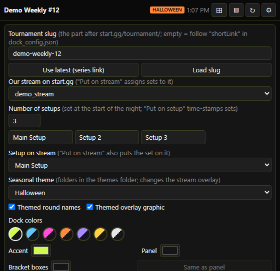
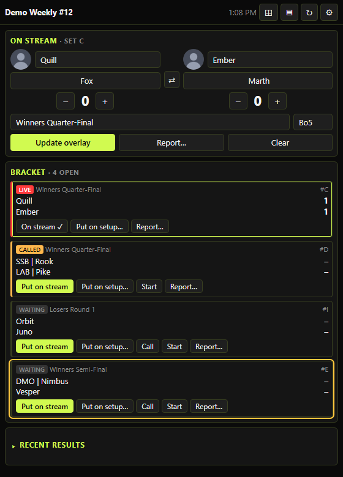
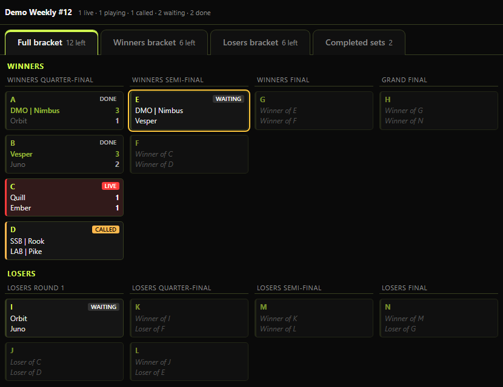
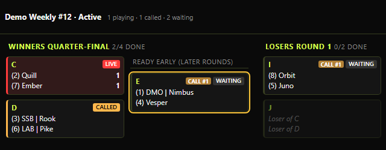
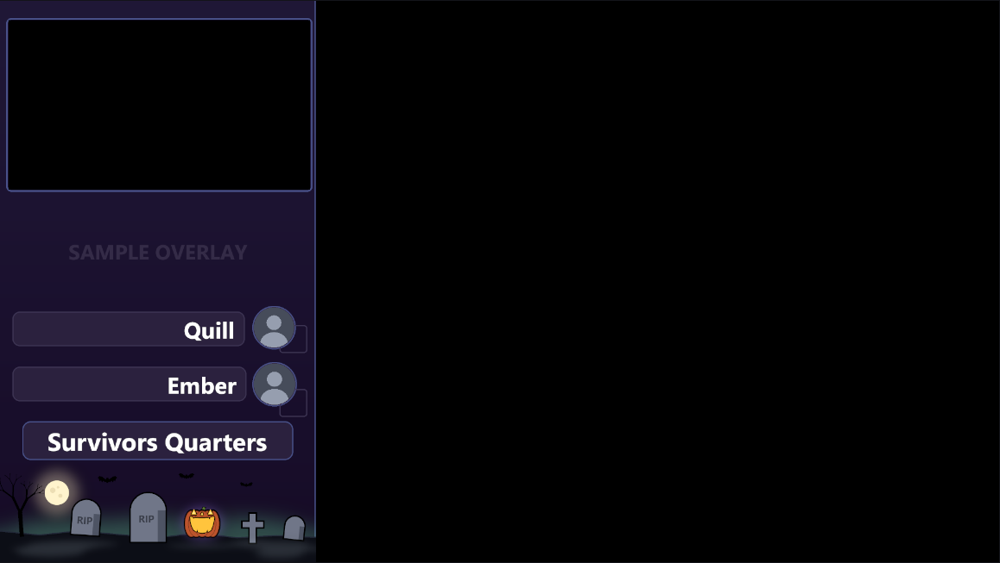
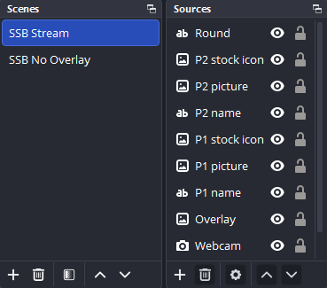
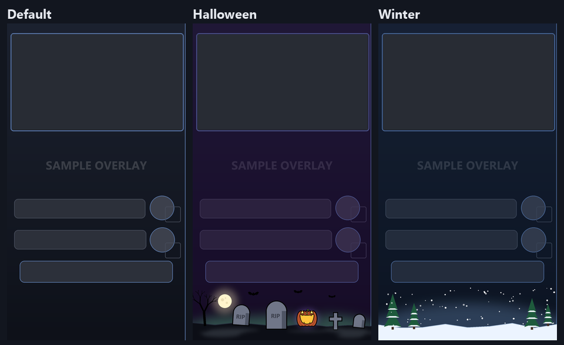

Stream PC: dock, OBS and themes
The night-of side: the Melee dock runs the bracket and writes the overlay files, OBS shows them and records, themes change the look for special weeks, and the Wiis save every game. Every screenshot here is the real dock and the real OBS running on the package's generic sample art and a made-up bracket. Ticks are saved in this browser ().
★ beta = used at our events but not thoroughly tested yet. Found a bug or something unclear? Open an issue on GitHub (FRjhracing).
Bigger event with several TOs, tablets, bracket screens or more than one stream? Guide 6: LAN and multi-TO events ★ beta.
How it fits together
One layout.json drives three things: where OBS puts every source, where the VOD renderer
draws the same pieces, and how long a name may get before the dock shortens it. Change your layout once, regenerate,
and stream and VODs stay in step.
1. Melee dock (one time)
Stream PC Install and start

Stream PC Settings in ⚙ (kept week to week)
Only in dock_config.json: shortLink, themesFolder (empty = tools\render\overlays\melee_themes), pollSeconds. Full list: tools\render\docks\melee\README.md.
2. The three pages

/): the On stream panel drives the overlay; below it every open set, live first.| Button | Does |
|---|---|
| Put on stream | Loads the set into the overlay (names, pictures, round, characters from last time), assigns it to our start.gg stream, marks it in progress and logs it on the stream setup. Badge turns LIVE. |
| Put on setup… | Pick the setup the players sat down at. Logs the start time (the VOD cutter needs it) and marks the set in progress. Picking the stream setup = Put on stream. |
| Call / Start | Same as on start.gg. |
| Report… | Score or DQ, sent to start.gg; ends the set's log entry. A set nobody put on a setup asks "On setup:" here. |
| Character (On stream) | Picker with colours: sets the stock icon on stream. Remembered per player. |
| Update overlay / Clear | Writes what the panel shows / blanks it. Names can be typed over; a typed shorter name wins. |
| Recent results > Reset | Re-opens a set (only if no later set started). |
"Shows: …" under a name = it was shortened to fit the OBS name box (prefix dropped, or cut with "…"). The overlay clears itself when the set on stream is reported, here or on start.gg.

/bracket): the whole event; tap a set for a window with the same buttons. Gold outline = a top-3 seed is waiting. Made for a touch screen.
/active): only the rounds being played, a suggested call order (closest seeds first: they run longest) and sets that are "ready early".3. OBS
Stream PC Build the scene from your layout


| Source | Shows | Placed by (layout.json) |
|---|---|---|
| Game capture | your capture card (pick the device) | game_x, game_w, full height, kept 4:3 |
| Webcam | your camera, behind the panel's transparent hole | cam [x, y, w, h] |
| Overlay | output\overlay.png = the active theme's panel | panel_w x 1080 at 0,0 |
| P1 / P2 name | output\player1_tag.txt / player2_tag.txt | right edge p1.name_right, centre p1.name_cy; box name_box |
| P1 / P2 picture | output\player1_pfp.png (start.gg picture, round) | p1.pfp [x, y, size] |
| P1 / P2 stock icon | output\player1_stock.png | p1.stock [x, y, size] |
| Round | output\match_round.txt (themed wording if on) | centre round.cx/round.cy; box round_box |
a file you provide · written by the dock per set · a device. Already have a Stream Updater scene? The dock writes the same file names: point your existing text/image sources at the dock's output\ folder instead.
Stream PC Recording settings (the render PC relies on these)
| OBS setting | Value | Why |
|---|---|---|
| Settings > Output > Recording > Recording Path | <SSD>\MeleeRecordings\ (or a local folder; copy it after) | the handoff folder |
| Recording Format | Hybrid MP4 (or MKV) | a crash or power cut doesn't ruin the file |
| Settings > Advanced > Recording > Filename Formatting | %CCYY-%MM-%DD %hh-%mm-%ss | the cutter reads the start time from the name |
| Settings > Video | Base and output 1920x1080, 60 fps (30 works) | layout.json is in 1920x1080 |
| Encoder | hardware (AMD/NVIDIA/Intel) if the PC has one; x264 otherwise | keeps the stream PC responsive |
Check the audio meter early in the night: a silent source can go unnoticed for a long time, and replays can rebuild the game audio but not the room or commentary.
4. Themes (special weeks)

make_theme_art.py from it. Your own panel works the same way.Stream PC Pick a theme for the night
Any PC Make a theme
A folder in melee_themes\ with a theme.json (name, round names) and optionally an overlay.png the size of Default's. To start from your own panel:
python tools\render\overlays\melee_themes\make_theme_art.py Halloween
Draws the scenery under your round bar (placed from layout.json), writes overlay.png, each piece as a layer for an image editor, and a preview. art.json moves things or picks the winter kit. Details: melee_themes\PROVIDE YOUR OWN.md.
5. Your own art (not included)
The package has no Nintendo art and no PROTOCOL art or font. Everything works without them; this is what to add for your look.
| What | Where | Without it |
|---|---|---|
| Your side panel (transparent webcam hole) | tools\render\overlays\melee_themes\Default\overlay.png | the grey sample panel |
| Positions, if your layout differs | melee_themes\layout.json (example in examples\), then re-run the OBS generator | PROTOCOL's positions |
Stock icons (123 PNGs, "<color> <Character>.png") | tools\render\docks\melee\assets\stock_icons\ (names listed in its PROVIDE YOUR OWN.md) | picker shows names; no icon on stream |
| Picture for players without one | tools\render\docks\melee\assets\default.png | a plain sample silhouette |
| Stream font | installed in Windows + "obs_font" (OBS); file in docks\melee\assets\fonts\ (dock name fitting); "font_file" (VODs) | Segoe UI |
Layout map of every spot on the panel: guide 4.
6. Wiis and flash drives
7. Ultimate side ★ beta
The Ultimate dock (tools\render\docks\ultimate\, port 8766) is the same idea without an overlay: it logs when each set
starts and ends on two recordings, plus the characters per player, so the render PC can cut the recordings. It is sent to the Ultimate
TO as a zip (steps in its README.md); SETUP.txt in it is their guide. On the night they press ● Rec started
when each OBS starts recording and use Put on recording 1/2 / Put on setup… for every set.
8. After the night (handoff, no AI needed)
Big file copies: Explorer is fine; robocopy "<from>" "<to>" "<file>" /J is faster for 10+ GB. Compare sizes after copying.
Troubleshooting
| Symptom | Fix |
|---|---|
| Pages say "Dock server not reachable" | start_dock.bat isn't running (or was closed). Start it; the pages reconnect. |
| "start.gg token not found" | set_token.bat, then close and restart start_dock.bat. |
| "No tournament yet" | Set "shortLink" in dock_config.json, or type a slug in ⚙ > Load slug. |
| "Port 8765 is busy" | The dock is already running (another window). Use that one. |
| Bracket takes 20-60 s to load | A network where start.gg's IPv6 doesn't answer: the dock already prefers IPv4; check the PC's internet. |
| Yellow "rate limit" note | start.gg allows 80 requests a minute; the dock slows down by itself. Close extra copies of the pages. |
| OBS shows old names / no overlay | Check the sources point at the dock's output\ (moved the dock? re-run the generator with --force and import again, or fix the paths in each source). |
| Long names too small in OBS | Set name_box in layout.json to your OBS name box size and add your font to assets\fonts\; the dock then shortens names before they get unreadable. |
| Theme missing from the list | Its folder needs a theme.json; check the "Themes:" path the dock prints at start (themesFolder). |
| Character picker shows names, not icons | No stock icons yet: see Your own art. |